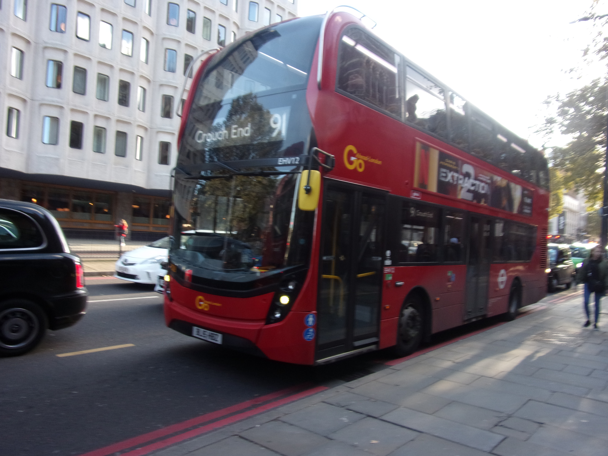

James Roskell BSC Trip To London 2023
Locations Visited June
- Greenwich
- University of Greenwich Open Day
- The British Library
Locations Visited October
- Visited Kings Cross Station
- University of Westminster Open Day
- The British Museum

london picture
Food & Drink Consumed June
- ?
- Free Chicken Salad Sandwich, Crisps and Bottle Water
- ?
Food & Drink Consumed October
- Free drink Tea for Breakfast
- Free Coronation Chicken Sandwich, Crisps and Bottle Water
- Paid for - Cheese & Ham Toastie, White Hot Chocolate Tea Time
Things to see